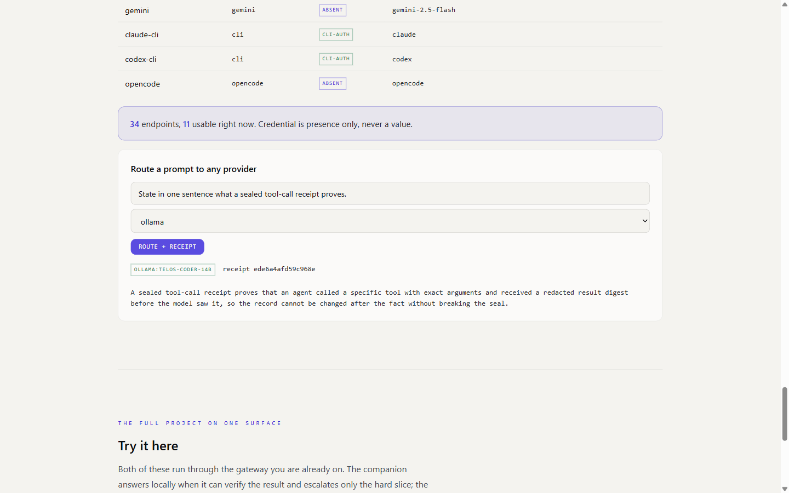

Flywheel: route, receipt, tamper, refusal.
The orchestration engine's own surface, then the check that cannot be talked past.
The surface
The gateway serves one page on one local origin. Below, captured 2026-08-04: the endpoint table reads 34 endpoints with 11 usable right now and records credential presence only, never a value. The prompt routes to a local model (telos-coder-14b through ollama) and the answer comes back with the sealed receipt's identifier beside it.

The tamper demonstration
Recorded terminal transcript, 2026-08-04, from the public repository at its default branch. Two chained tool-call receipts are sealed and verified, one byte of the second receipt's admission decision is corrupted, and the verifier answers TAMPERED / SEAL_MISMATCH with the recomputed hash named. The chain check refuses too. The verifier is Python standard library only: no key, no network, no dependency on the runtime that emitted the receipt.
$ tamper-demo (flywheel harness, stdlib only, offline) STEP 1 -- seal two chained tool-call receipts receipt 1: seal e4cb1ba6daf5e1c3... (read_file, builtin-read, allow) receipt 2: seal 63a2f2d838e693ae... (run_tests, builtin-exec, allow, chained to 1) STEP 2 -- verify both, untouched (recomputes every seal from the record alone) receipt 1: verdict MATCH seal e4cb1ba6daf5e1c30701860bbd440b6e2fb3fe7b7a4e4d6d9af68279fdcd196d receipt 2: verdict MATCH seal 63a2f2d838e693ae2077792d08f76ab5abb73f027301cf11c208898932aa8819 chain: verdict MATCH n=2 STEP 3 -- corrupt ONE byte: receipt 2's admission 'allow' -> 'aIlow' tampered receipt 2: verdict TAMPERED failure_class: SEAL_MISMATCH detail: seal sha256:63a2f2d838e6, recomputed sha256:6885189a7439 STEP 4 -- the chain refuses too chain: verdict TAMPERED n=2 (receipt 1 MATCH, receipt 2 TAMPERED)
Raw transcript: artifacts/flywheel-tamper-demo-2026-08-04.txt
Run it yourself
One line from PyPI, or from a clone of github.com/HarperZ9/flywheel:
pip install flywheel-verify # the PyPI name; the command is `flywheel`
flywheel up # the surface above
# or, from a clone:
git clone https://github.com/HarperZ9/flywheel
cd flywheel
pip install -e .
python scripts/run_harness_cli.py app --port 8799 # the surface above
python -m harness.cli tasks/example_pass # ends in FAIL, deliberately:
# the default proposer offers a
# wrong candidate and the engine
# refuses to accept it
The rejection is the feature: acceptance you cannot forge is what makes the acceptance worth having.
Claim boundary
This page demonstrates that a sealed receipt refuses tampering and that the gateway routes and seals on one surface. It does not demonstrate model quality, capability uplift, or that a verified answer is true in the world; a passing check proves the check passed, and each verdict says so.
Captured and verified 2026-08-04. The screenshot was reviewed for private paths and credential-shaped strings before publication; the endpoint table records presence labels only.